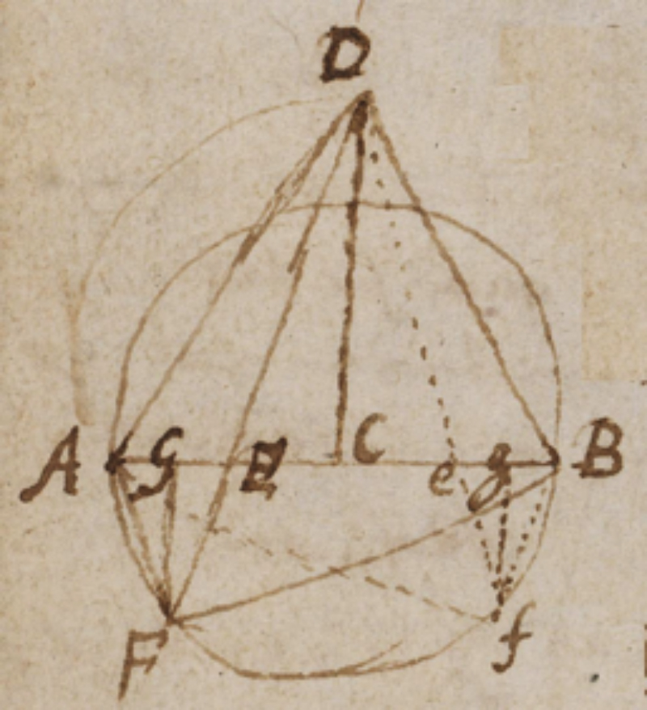
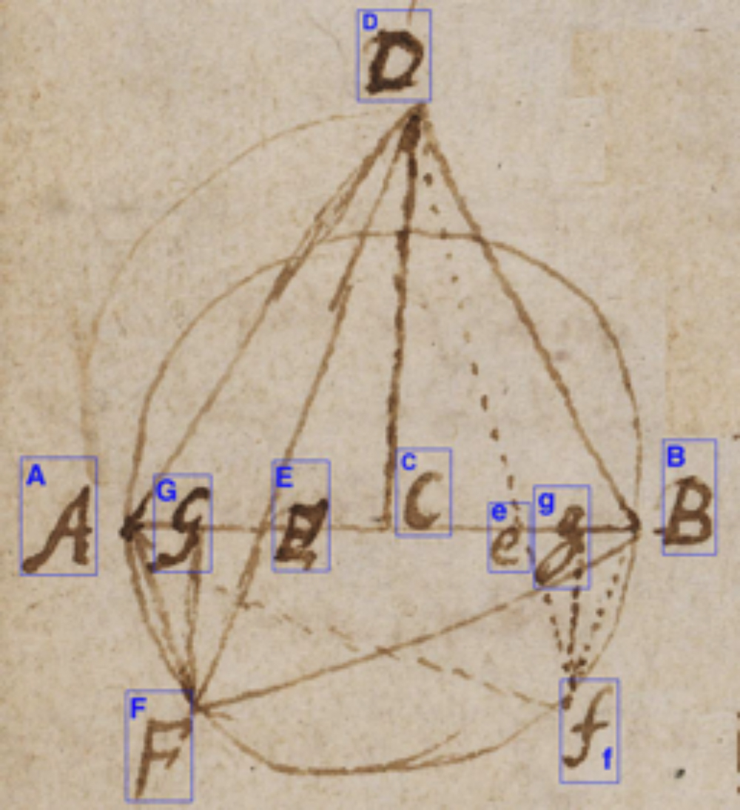
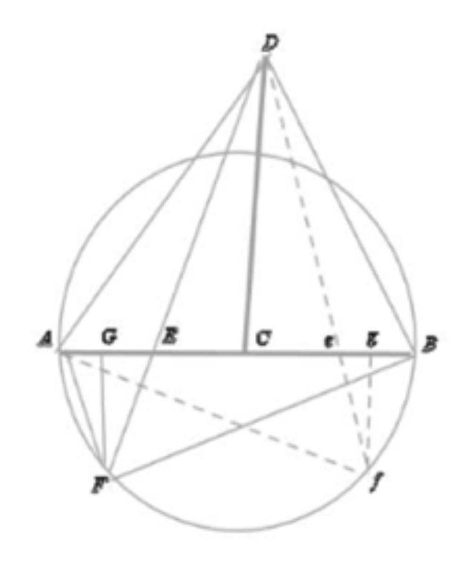

Introduction
The edition of the works of Leonhard Euler (1707-1783), entitled Leonhardi Euleri Opera omnia (LEOO), is a monument of scholarship known to most historians of science. Leonhard Euler’s Opera omnia consists of 81 volumes, 76 of which have already been published in paper format as four series of books. Volume IV, LEOO IV, of the fourth series contains the correspondence between Leonhard Euler and the German mathematician Christian Goldbach, encompassing 200 letters sent over 35 years (Martin Mattmüller, 2015). The aim of our project is to present this volume to researchers in science and history as a digital edition via the Bernoulli-Euler Online Platform, BEOL (Tobias Schweizer, 2017). BEOL is implemented using Knora (Benjamin Geer, 2017), a generic virtual research environment for the humanities. In this environment, scientists have access to all edited materials of LEOO IV, and can also annotate and edit material in their private workspace and share the results of their research with others. In Knora, the contents of the LEOO IV volume can be represented as a directed graph providing an overview of the network of different entities (letters, persons, bibliographic items, etc.). The tools provided in this environment are intended to facilitate research on the origin of ideas and findings.
Technical steps
LEOO IV consists of two parts: one with transcriptions of the letters in the original languages (Latin and German), and another with English translations of the letters. LaTeX is used to edit both text and mathematical formulas. The volume also contains an index of persons, a bibliography of cited works by Euler, and a general bibliography. The project aims to import all this content into Knora, which represents data as RDF graphs using OWL ontologies (Pascal Hitzler, 2012). Therefore, ontologies are created to describe the structure of the texts and entities of this edition. The data itself must then be converted to XML and imported into Knora.
The data model specifying the structure of the data to be imported must be given in the form of OWL ontologies. 1 All bibliographical items, as well as persons in the name index of the edition, are represented internally as RDF triples. For example, every person is represented as an RDF resource belonging to the OWL class beol:Person, which has properties such as beol:hasFamilyName. The property beol:hasIAFIdentifier refers to the IAF/GND dataset maintained by German national library 2 , and ensures the uniqueness of each person mentioned in the BEOL platform.
Figure.1 illustrates a part of the generic bibliography ontology, which we have defined to describe all the bibliographical information needed in the BEOL platform (publication types, manuscripts, publishers, etc.). The prefix biblio refers to this ontology, beol refers to the ontology of BEOL-specific entities, and knora-base is the standard Knora ontology, which defines the basic data structures that Knora works with. Ellipses represent types or classes of resources, arrows semantically defined properties attached to them, and rectangles their literal values.
In Knora, a text document (stored in a knora-base:TextValue) can contain markup as well as text. Internally, markup is stored separately from the text, using an RDF-based standoff format 3 . A project such as BEOL defines a mapping between XML and Knora’s standoff/RDF markup; texts can then be imported from XML into standoff and exported from standoff back into identical XML 4 . Standoff/RDF markup can contain links to other resources, such as a person or a bibliographical entity mentioned in a text. The Knora API server ensures that the target of the link exists. Standoff links are directed statements, but can easily be queried as incoming links to a given resource.
Figure 1. OWL ontology for bibliographical data
We have also defined a data model for letters and their metadata such as author, recipient, date, etc., which provides a network of the correspondence included in the edition. Figure.2 illustrates an excerpt from ontology of the whole LEOO IV project.
Figure 2. Excerpt from the LEOO IV project data model
First, the index of persons and the bibliographical items of LEOO IV are written in XML format, using XML schemas that are automatically generated by the Knora API server, based on the ontologies defined for the project. This XML data is then validated against these schemas. After validation, the data can be imported in a single API request (an HTTP POST request to the Knora API server).
Second, the text of the letters is imported using a similar process. Although the text has been transcribed in LaTeX, these transcriptions are first converted to XML to ensure the homogeneity of texts from different editions, and to make it possible to present texts as TEI/XML by applying XSL transformations. The LaTeXML tool (Miller, 2017), with the addition of some BEOL-specific Perl scripts, is used to convert LaTeX to XML. All references to persons and bibliographical items within the text of the letters are replaced with references to the corresponding resources in BEOL, making them queryable via the Knora API. The XML representing the letters is then imported using the same process as for the bibliographical data.
Future work
Since we have developed the methodology for this type of digital edition in a generic way, we expect to be able to integrate all the other recent volumes of Leonhard Euler’s Opera omnia, which have also been edited using LaTeX. The older volumes in printed form should be scanned, their text should be recognized via OCR, and their structure should be defined with markup.
  
Figure 3. Original figure (left), detected labels (middle), reconstructed figure (right)
Most of the older volumes contain figures that are reproduced from scanned letters. We are working on a machine learning algorithm to interpret these figures as well as their labels, so they can be automatically redrawn as vector graphics, see Figure. 3.
A user interface for designing these ontologies is under development.
Integrated Authority File, Deutsche National Bibliothek, http://www.dnb.de/EN/Standardisierung/GND/gnd_node.html
Text with Standoff Markup, http://www.knora.org/documentation/manual/rst/knora-ontologies/knora-base.html#text-with-standoff-markup